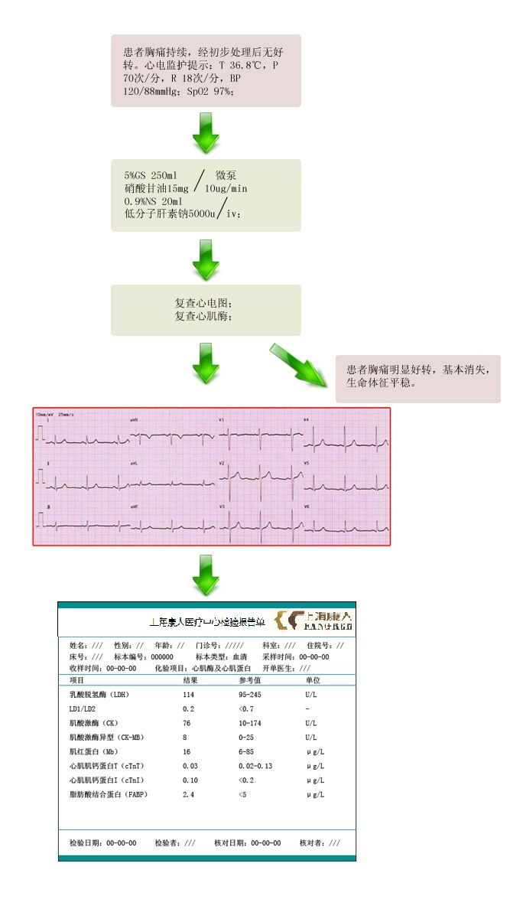

【病例摘要】
- 现病史：患者，男，56岁，反复胸痛2年，再发半小时。患者2年前在劳累后出现胸骨后钝痛，休息后可自行好转。每次持续时间较短，伴心悸，2年来上述症状反复发作。近来远程平路行走后亦出现胸痛症状，持续约数十分钟，爬楼梯后明显加重。半小时前散步中再次出现胸骨后钝痛，持续约数分钟，休息后略有好转，但仍有隐痛，无胸闷气急，无头晕头痛，无恶心呕吐。
- 既往史：患者发现“高血压病”5余年，服用“珍菊降压片”，血压控制在130/90mmHg左右。否认糖尿病、肾病病史，否认肝炎、结核病史，否认重大外伤及手术史，否认药物过敏史。
- 查体：T 36.8℃，P 70次/分，R 18次/分，BP 120/88mmHg；两肺呼吸音清，未闻及干湿罗音；心界不大，心率70次/分，律齐，未闻及明显心脏杂音；腹平软，全腹无压痛反跳痛，肝脾肋下未及；双肾区无叩痛，双下肢无浮肿，神经系统检查未见阳性体征。

【辅助检查】
- 心肌酶谱:

- 心电图:

【诊断】
- 急性冠脉综合征 不稳定型心绞痛
【事件】
